AI Academy · Level 2 · Grade 7 · Week 2 · Student lesson
Decompose a Goal
Learn to understand, design, build, test and explain AI systems responsibly.
Project: Transparent Book Recommender
Before you start
Week 1: a process should state inputs and outcomes.
Plan time to read, investigate and explain. Keep predictions separate from observations.
Student lesson · 1 of 16
Your mission
Your learning target
I can distinguish a function definition from a function call.
I can match positional arguments to parameters in order.
I can reuse one function and test that it uses the supplied values.
Remember before reading
Close your notes first. A rough first answer helps us choose the right starting point; it is not a score for your ability.
Without opening the old lesson, explain one key idea from Precision in Algorithms. Give an example and a mistake that the idea helps you avoid.
After trying, check the relevant lesson or ask your teacher. Change the part of your explanation that the evidence shows was wrong.
Week 2: Decompose a Goal
Complex tasks become manageable when divided into testable subproblems.
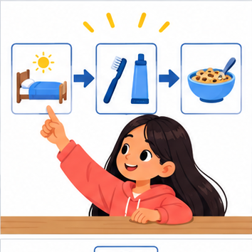
THINKER MISSION
Break a school-morning helper into inputs, decisions, and actions.
Thinker name and date:
Readiness for the connected explanation
A script sets capacity = 12 and used = 4. What does print(capacity - used) display?
This week’s end goal
By the end, I can decompose a calculation into a function with explicit arguments and a returned result.
Student lesson · 2 of 16
Notice the evidence
PICTURE STORY
Notice → Predict → Explain
Begin with visible evidence. Do not explain more than the picture and information support.
MYSTERY
The learners must use decompose a goal to solve a problem. What information do they have? What decision or calculation do they make? What would count as evidence that it worked?
Three observations (what you can point to):
My prediction and the clue supporting it:
A closer explanation
A fictional supply cupboard records capacity and the number of occupied spaces. The remaining-space calculation is capacity minus used. Instead of copying the same instructions for every cupboard, define one function and call it with different values. A function makes a procedure reusable; its name alone does not guarantee that its instructions are correct.
Our input contract requires nonnegative integer counts with used no greater than capacity. The example assumes these conditions; it does not validate them. This week the function prints its result. Week 9 will show how to return a value for later calculations.
Student lesson · 3 of 16
See how it works
VISUAL MECHANISM
Input → Process → Output
Trace the information. At each stage, ask what changed and how you could test it.
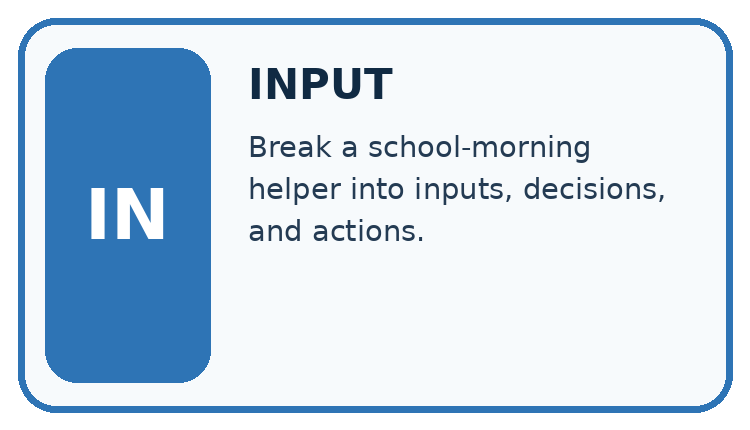
↓
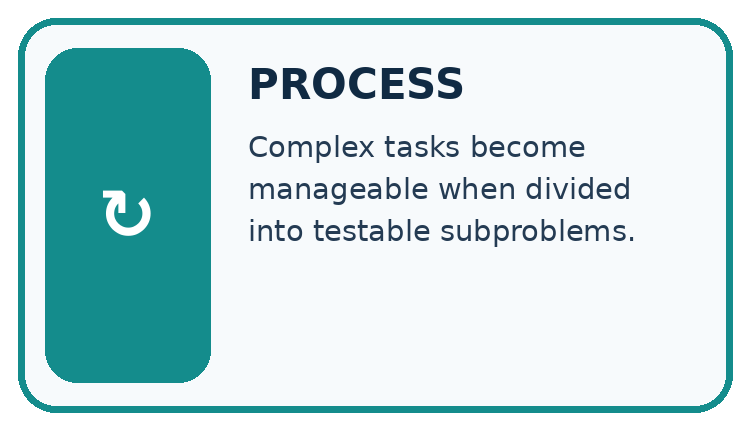
↓
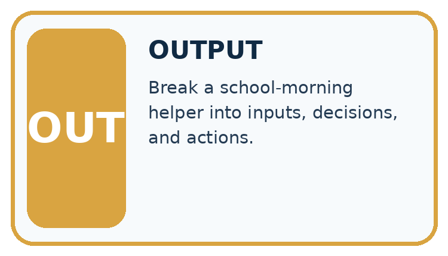
Which stage could fail even when the other two are correct? Explain:
A closer explanation
def show_remaining(capacity, used):
remaining = capacity - used
print(remaining)
show_remaining(12, 4)
show_remaining(10, 7)Arguments matched in order
def introduces the definition. The function name is followed by parameter names in parentheses and a colon. Four-space indentation marks the body. Executing the definition creates the function but does not run its body. The two unindented calls then run it, producing 8 and 3 on separate lines. A blank line helps readability; indentation determines the block.
Connect the picture and the explanation
Point to the input, the deciding step and the result in this week’s visual. Explain the same step in ordinary words. A picture helps when you can say what each part represents.
Student lesson · 4 of 16
Compare the cases
CASE GALLERY
Four Tests, Four Kinds of Evidence
A system is not understood until it survives more than one comfortable example.


NORMAL CASE: predict and name evidence. BOUNDARY CASE: predict and name evidence.


MISSING INFORMATION: predict and name evidence. TRANSFER CASE: predict and name evidence.
Which case is most likely to reveal a hidden assumption? Why?
Change one thing in the pictured case
Change: Call labels(4,0) instead.
Prediction: The returned result is 0, and the caller prints 0.
Reason: Four shelves times zero labels per shelf is zero.
Student lesson · 5 of 16
Words that unlock the idea
VOCABULARY LAB
Words You Can Use to Reason
A definition matters when you can recognize the idea, use it, and contrast it with a near-miss.
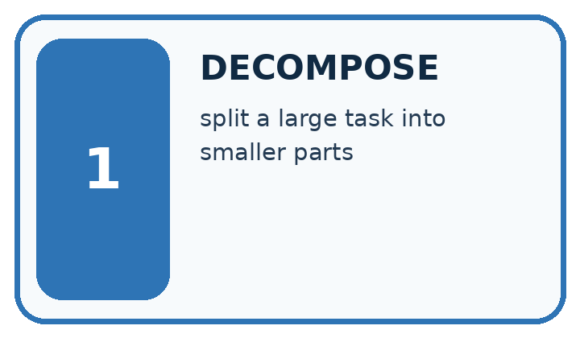
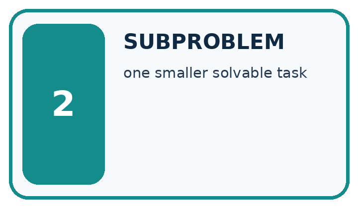
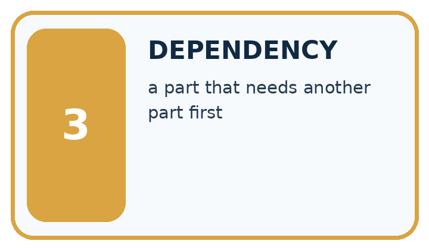
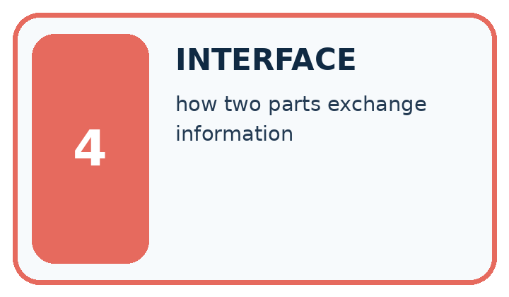
| Word | My own example | Not this / boundary |
|---|---|---|
| decompose | Break a goal into smaller parts with clear responsibilities and connections. | |
| subproblem | A smaller part of a larger problem with its own inputs and intended result. | |
| dependency | Something a step needs from another step before it can proceed correctly. | |
| interface | An agreed boundary specifying how two parts exchange information or actions. |
Words used in the closer explanation
| Word | Meaning |
|---|---|
| Function | A named block of reusable instructions that runs when called |
| Definition | Code that creates a function and specifies its body |
| Call | An instruction that runs a function with supplied arguments |
| Parameter | A name in a function definition that receives an argument |
| Argument | A value supplied when calling a function |
Student lesson · 6 of 16
Follow a worked example
WORKED EVIDENCE
Reason Step by Step
Predict first. Then check each step. A correct answer without visible reasoning is incomplete evidence.
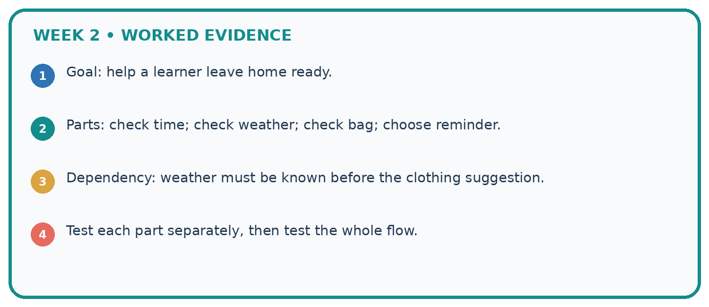
1. Goal: help a learner leave home ready.
2. Parts: check time; check weather; check bag; choose reminder.
3. Dependency: weather must be known before the clothing suggestion.
4. Test each part separately, then test the whole flow.
Recalculate, retrace, or restate the reasoning in your own representation:
CHECK Did the evidence answer the exact question? Did the total, path, or source record stay consistent?
A closer explanation
| Execution event | What happens |
|---|---|
| Execute the definition | Create the function; no output yet |
| Call with 12 and 4 | Match parameters; subtract; print 8 |
| Call with 10 and 7 | Match new values; subtract; print 3 |
| After the second call | Continue with the next statement |
In show_remaining(12, 4), 12 and 4 are arguments; capacity and used are parameters. Positional arguments match from left to right. show_remaining(4, 12) produces -8, showing why order matters; it also violates our written input contract. Use a fresh file with the definition before its calls.
Learn from the worked case
Cover the result before checking it. Say what is given, choose the procedure, and follow one step at a time. Then uncover the result and explain your first mismatch. Ask why a step is allowed, not only what number it produces.
A pictorial worked case: Decompose a Goal
A fictional library computes total spine labels needed for several equal shelves.
The facts we will use
Define labels(shelves,per_shelf): return shelves*per_shelf.
Call needed=labels(4,6), then print(needed). No other side effects are defined.

Read the picture one step at a time
Why this result follows
A function separates one named job from the surrounding program. Arguments supply data for this call; return supplies its result. A print statement in the caller is a different action. Clear parameter names help detect swapping or misusing inputs without assuming every function prints automatically.
What this example does not establish
This function assumes compatible numeric inputs; it does not reject negative shelves or verify real shelf contents.
Read the labelled picture: What happens visibly if the caller stores needed but omits print(needed)?
Change one thing: Call labels(4,0) instead. Predict the result before checking the explanation. What remains the same?
Student lesson · 7 of 16
Find and repair a mistake
ERROR DETECTIVE
Compare → Diagnose → Repair
Do not patch the answer. Find the earliest unsupported assumption, wrong step, or weak evidence.
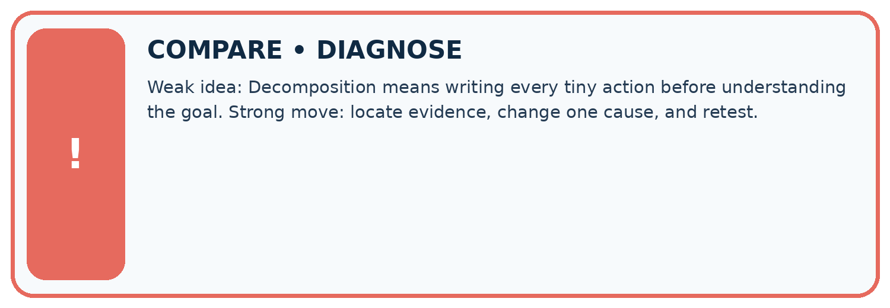
| Evidence record | Expected | Actual | Likely cause / next test |
|---|---|---|---|
| normal case | works | ||
| boundary case | stated rule | ||
| missing input | safe response | ||
| fresh transfer | generalizes |
Repair one cause. Why is this repair better than changing several things?
A closer explanation
For each call, record the supplied arguments, expected printed output and observed output. Include different values that produce different answers, plus a valid zero-result case. Call order controls output order; it does not change the subtraction rule. These functions use supplied data and written instructions, not a pattern learned from examples.
Student lesson · 8 of 16
Practise together
LOGIC STUDIO
Trace Before You Run
Block code, pseudocode, tables, and diagrams are different ways to expose the same reasoning.

SET evidence_record PREDICT expected_result RUN one normal case and one boundary case COMPARE actual_result with expected_result IF different: locate first cause; change one factor; RETEST EXPLAIN result, limitation, and next safe step
Trace one input. Which line changes the state or chooses a path?
A closer explanation
def show_remaining(capacity, used):
remaining = 12 - 4
print(remaining)
show_remaining(12, 4)
show_remaining(10, 7)This faulty function prints 8 twice. Its fixed numbers ignore the arguments. Replace 12 - 4 with capacity - used, then rerun both calls. Testing only the first call would miss the bug because its expected answer happens to be 8.
For this two-parameter definition, show_remaining(12) raises TypeError because an argument is missing. Correct the call to supply both values. Naming a function without calling it does not execute the body: the parentheses in show_remaining(12, 4) are part of the call.
Practise with less help: Follow the execution order
Use workbook W2 for the connected example “Functions and arguments”. First fill the input and rule boxes. Try the middle steps before asking for a hint. After a hint, try the next step yourself.
| Plan | Do | Check |
|---|---|---|
| What is given? Which rule or procedure applies? | Record each intermediate step. | Does the result follow? What remains unknown? |
Explain your trace to a partner. Your partner points to one step to check. Swap roles on the next case. Each person writes their own explanation.
Check your reasoning
Use the worked case for Functions and arguments. Proposed explanation: “Writing def runs the body immediately”. Decide whether this explanation is supported. Point to the step or supplied fact that decides; explain your repair if needed.
Answer on your own before discussion. If you are unsure, say which step you need help with.
Explain the picture
What happens visibly if the caller stores needed but omits print(needed)?
This is supported practice. Keep the separately named independent case for an attempt before feedback.
Student lesson · 9 of 16
Run the investigation
EVIDENCE LAB
Predict → Test → Record → Explain
Keep expected and actual results separate. Surprises are useful data when recorded honestly.
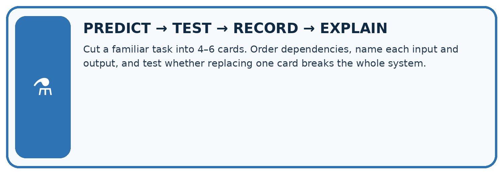
Cut a familiar task into 4–6 cards. Order dependencies, name each input and output, and test whether replacing one card breaks the whole system.
| Test / input | Prediction | Actual | Evidence / calculation | Change or keep? |
|---|---|---|---|---|
| normal | ||||
| boundary | ||||
| missing | ||||
| fresh transfer |
What did the hardest test teach you that the normal test did not?
Plan → try → check
Before trying: what do I expect, and why? While trying: which step could first go wrong? Afterwards: what did I actually observe, and what should change? Keep “not run” if you only traced the procedure.
Student lesson · 10 of 16
Build your understanding
MASTERY
From Knowing the Word to Owning the Idea
Move upward only when you can produce evidence without copying the worked example.

1 • NAME: Define the concept without repeating the textbook.
2 • TRACE: Show the information, state, branch, calculation, or evidence path.
3 • APPLY: Solve a different example independently.
4 • CHALLENGE: Find a boundary case, counterexample, or unfair outcome.
5 • EXPLAIN LIMITS: Say when the result should not be trusted or used alone.
My strongest evidence of independent understanding:
Student lesson · 11 of 16
Connect your project
CUMULATIVE PROJECT
Transparent Book Recommender
Every week adds one inspectable piece. The system must show how it reached a result.
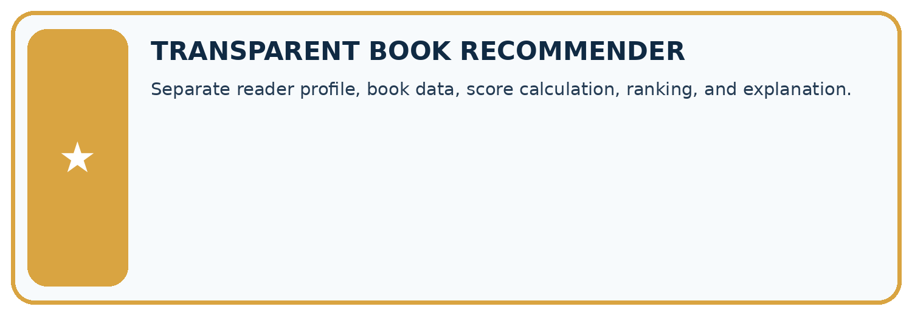
THIS WEEK’S CHECKPOINT Separate reader profile, book data, score calculation, ranking, and explanation.
SYSTEM MAP Reader need → allowed inputs → transparent rule or score → ranked candidates → explanation → test record → human decision
What will you add, change, or verify in the project this week?
What should remain under human control?
RESPONSIBLE DESIGN Collect only necessary information. Show uncertainty and limits. Never confuse a ranking with a fact about a person.
Evidence for your project
Give the recommender separate validation, eligibility and scoring functions whose inputs and results can be tested independently.
Student lesson · 12 of 16
Show what you know
INDEPENDENT MASTERY PROOF
Explain • Transfer • Test • Defend
Complete this page without copying the worked example. Your reasoning matters more than decoration.
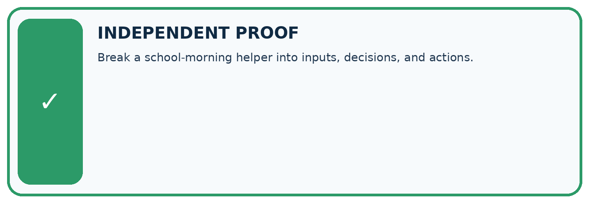
CHALLENGE Break a school-morning helper into inputs, decisions, and actions.
1. My fresh example, trace, calculation, or design:
2. My evidence that it works (include a boundary or missing-data case):
3. One limitation, fairness concern, or situation needing human review:
SELF-CHECK □ I explained the mechanism □ I used evidence □ I tested a fresh case □ I named a limitation □ I can answer ‘why?’
Student lesson · 13 of 16
Study a complete case
Week 2 Worked case
Use the supplied details to practise the weekly concept before attempting the independent question. This case extends the illustrated lesson.
The situation
A class wants to recommend one of five library books.
The question
Decompose the goal into checkable steps.
Worked explanation
Collect preferences, record book traits, score each with a declared rule, handle ties and explain the suggestion. Each step produces an inspectable record.
Explain it in your own words
Which detail supports the answer, and why does it matter?
Trace the supplied case visually
Decompose a recommendation into records
| Evidence or stage | Value or result |
|---|---|
| Preferences | Collect reader choices |
| Traits | Describe five books |
| Scoring | Apply the declared rule |
| Decision | Handle ties and explain |
A class wants to recommend one of five library books.
Decompose the goal into checkable steps.
Collect preferences, record book traits, score each with a declared rule, handle ties and explain the suggestion. Each step produces an inspectable record.
Student lesson · 14 of 16
Try a new case independently
Independent case: Create a new function independently
Each sealed box contains 6 counters. Define show_stock(boxes, loose) to print the total counters using its two parameters. Assume nonnegative integer arguments. Call it with (3, 2), (0, 2) and (3, 0). Predict each output and explain why show_stock(2, 3) is a different case.
Attempt this case before feedback. Record any help. Earlier examples below are further practice; a case already practised with feedback cannot establish fresh transfer.
Week 2 Independent application
Close the worked explanation. Apply the idea to this different question without copying.
A recommender must receive a topic, find matching books and show one title. Split the goal into three tasks and state what passes between them.
My answer, with a trace, calculation or supporting evidence
Create and test
Change one relevant detail. Predict the result before testing. Include a boundary or missing-information case when it helps reveal a limit.
My changed input and expected result
Connect to your project
Separate reader profile, book data, score calculation, ranking, and explanation.
The evidence I will keep
Your teacher has the independent answer and scoring criteria. Complete the matching workbook week to keep your practice evidence together.
Transfer practice from the original programme
Decompose a recommender for books under 120 pages in a requested genre. A teammate scores every book before checking the page limit. Explain a clearer order and the record passed between stages.
Use feedback to improve
Attempt the independent case before hints. Record whether you worked alone, used a hint or followed a model. After feedback, fix the first unsupported step and explain why it changed. A later check uses a changed case, not a copied answer.
Student lesson · 15 of 16
Your lesson route
Start with this question: A fictional library computes total spine labels needed for several equal shelves.
| By the end, I can | How I will show it |
|---|---|
| Distinguish a function definition from a function call | Explain the deciding step, show a trace or test, and state one limit. |
| Match positional arguments to parameters in order | Explain the deciding step, show a trace or test, and state one limit. |
| Reuse one function and test that it uses the supplied values | Explain the deciding step, show a trace or test, and state one limit. |
Remember → watch and explain → try with help → investigate → try independently → keep project evidence. Your teacher may spread this lesson across several classes.
Keep your first prediction. Compare it with what the evidence shows and explain any change.
Student lesson · 16 of 16
Finish and return
Close your notes. Explain this goal in your own words: Distinguish a function definition from a function call
If you are unsure, return to the worked picture and explain one arrow. If you are ready, change an input or assumption and justify your prediction.
Save your workbook evidence. At the next review, try a different case before opening your old answer.